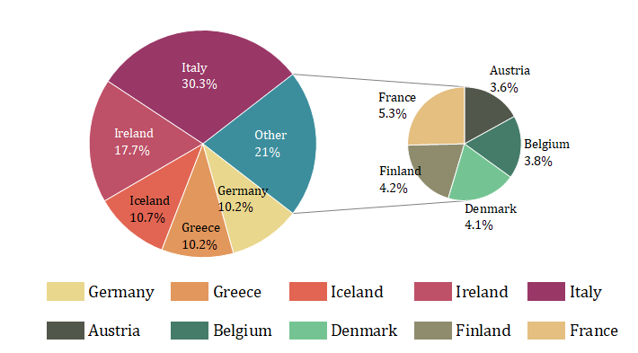

Kreis von Kreis
Pie-of-Pie

Datenanforderungen
Wählen Sie genau eine Y-Datenspalte (oder einen Bereich aus einer Spalte) aus.
Diagramm erstellen
Wählen Sie die gewünschten Daten aus.
Wählen Sie im Menü .
Vorlage
PIEofPie.OTP (installiert im Origin-Programmordner).
Hinweise
Ein Kreis-von-Kreisdiagramm ist auch eine Variante des 2D-Kreisdiagramms, das zwei Kreisdiagramme, verbunden durch zwei gerade Linien, enthält:
- Das Kreisdiagramm ist das Hauptkreisdiagramm, befindet sich links vom Layer, zeigt die gesamte Komponentenverteilung in Prozent, einschließlich dem Segment "Sonstige" ("Other"), das die Summe der kombinierten Segmente darstellt.
- Ein weiteres Kreisdiagramm ist das Unterdiagramm, befindet sich rechts vom Layer, zeigt die Einzelheiten der kombinierten Segmente des Segments "Sonstige" ("Other").
 |
Falls Ihnen ein 2D-Kreisdiagramm vorliegt, und Sie ein Kreis-von-Kreisdiagramm zeichnen möchten:
- Gehen Sie zur Registerkarte Segmente im Dialog Details Zeichnung.
- Legen Sie fest, wie die Segmente als das Segment "Sonstige" kombiniert werden soll, indem Sie die Auswahlliste Segmente kombinieren nach verwenden. Falls Sie Prozent oder Wert in dieser Liste auswählen, müssen Sie einen Wert für das Feld Prozent/Wert <= eingeben. Falls Sie Benutzerdefiniert auswählen, können Sie die Segmente wählen, die Sie kombinieren möchten, und zwar in der Spalte Kombinieren der Tabelle Segmente explodieren oder kombinieren.
- Aktivieren Sie das Kontrollkästchen Kombinierte zeigen als und wählen Sie dann Kreis in der nächsten Auswahlliste.
- Nehmen Sie Anpassungen wie Farbe des kombinierten Segments, Größe der zweiten Zeichnung und Abstand zwischen den Zeichnungen vor.
|
Referenz
Um Ansichtswinkel, Drehung, Radius und Mitte benutzerdefiniert anzupassen, siehe Die Registerkarte Geometrie (Details Zeichnung).
Um die Segmente, wie explodierende und kombinierte Segmente, benutzerdefiniert anzupassen, siehe Die Registerkarte Segmente (Details Zeichnung).
Um Segmentbeschriftungen benutzerdefiniert anzupassen, siehe Die Registerkarte Beschriftungen (Details).